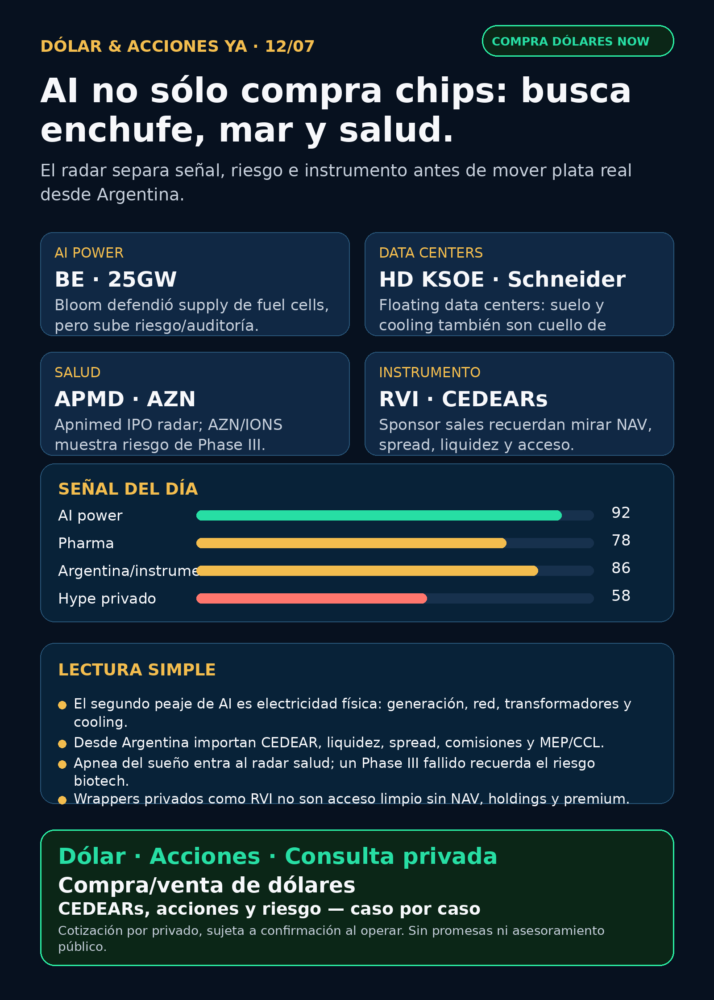

AI se mueve del chip al enchufe.
Bloom, data centers flotantes, salud y wrappers: research educativo para Argentina, no orden de compra.
Texto WhatsApp
Placa del día

Dólar & Acciones YA — 12/07
Fecha de edición: 2026-07-12.
Lectura simple del día
La señal de hoy es bastante clara: AI no se está trabando sólo en chips; se está trabando en electricidad, cooling, suelo, permisos e instrumentos reales para invertir.
En criollo: el data center no vive de magia. Necesita generación, fuel cells, transformadores, switchgear, subestaciones, agua/refrigeración y financiamiento. Por eso aparecen nombres como Bloom Energy, Schneider, HD Hyundai, GE Vernova, Siemens Energy o Hitachi Energy al lado de NVIDIA/TSMC/ASML.
Para Argentina hay una segunda capa: buena tesis afuera ≠ buen instrumento local. Antes de mover plata hay que separar acción global, CEDEAR si existe, liquidez, spread, comisiones, MEP/CCL, acceso por broker y tamaño prudente dentro de cartera.
Contexto dólar público al momento del armado: BlueLytics mostró oficial vendedor ARS 1.513,00 y blue vendedor ARS 1.515,00 con timestamp 2026-07-10 19:45 ART. CriptoYa mostró oficial vendedor ARS 1.510,00 y blue vendedor ARS 1.510,00 a las 08:21 ART; USDT cripto ask ARS 1.570,91 a las 08:45 ART; MEP AL30 24hs ARS 1.567,51 y CCL AL30 24hs ARS 1.540,43 con timestamp 2026-07-10 16:59 ART. MEP/CCL de cierre previo sirven como referencia educativa, no como precio vivo de broker.
Esto está ordenado por valor educativo y fuerza de señal de radar, no por recomendación de compra.
Tesis central
La tesis central: el segundo peaje de AI es la electricidad física. El chip sigue siendo importante, pero el cuello de botella se mueve hacia generación onsite, red, power hardware, cooling y ubicaciones no tradicionales como data centers flotantes.
La oportunidad de research está en detectar quién cobra peajes reales en esa cadena. El riesgo: muchas empresas pueden quedar caras, no tener instrumento local limpio, o mezclar oportunidad con problemas contables, supply chain, deuda o regulación.
Señales educativas del día
1) Bloom Energy — fuel cells para AI power, oportunidad con riesgo elevado
- Empresa/ticker: Bloom Energy /
BE. - Qué pasó: Bloom presentó un 8-K el 9/7 rechazando un short report de Hunterbrook. La compañía dijo que las acusaciones sobre resultados/contabilidad son falsas y que tiene supply suficiente de scandium oxide, no dependiente de China, con visibilidad para soportar producción de 25GW de fuel cells por año.
- Fuente primaria: SEC 8-K https://www.sec.gov/Archives/edgar/data/1664703/000162828026047734/be-20260709.htm
- Lectura en criollo: si los data centers necesitan energía rápida y dedicada, fuel cells entran al radar. Pero un 8-K defensivo no absuelve nada: obliga a auditar supply chain, backlog, márgenes, clientes y short report original.
- Accionable local Argentina: acción global; CEDEAR/acceso local a verificar. No tratar como ejecución sin precio, liquidez, spread e instrumento claro.
- Estado: vigilar / riesgo elevado.
2) HD KSOE + Schneider — data centers flotantes
- Empresas: HD Korea Shipbuilding & Offshore Engineering / HD Hyundai group; Schneider Electric.
- Qué pasó: Yonhap informó un MOU entre HD KSOE y Schneider Electric para desarrollar tecnología de infraestructura y engineering para floating data centers en plataformas offshore. KED agregó contexto: falta de suelo y costo de cooling empujan soluciones en el mar.
- Fuentes: Yonhap https://en.yna.co.kr/view/AEN20260708006700320 ; KED https://www.kedglobal.com/artificial-intelligence/newsView/ked202607080012
- Lectura en criollo: cuando tierra, energía y refrigeración se vuelven cuello de botella, el data center empieza a parecer infraestructura pesada: barcos, plataformas, electricidad, agua y permisos.
- Accionable local Argentina: no accionable directo. Schneider es global; HD Hyundai/HD Hyundai Electric (
267260.KS) requiere limpiar exchange, liquidez y acceso. Para Argentina, primero educación/proxy, no compra automática. - Estado: fortalece tesis estructural / vigilar.
3) Apnimed — salud fuera del GLP-1
- Empresa/ticker solicitado: Apnimed /
APMD. - Qué pasó: Apnimed presentó S-1 el 10/7 para listar en Nasdaq bajo
APMD. Su único candidato clínico es AD109/Oxnimbi, oral para apnea obstructiva del sueño. La compañía dice que envió NDA a FDA en abril 2026 y que dos Phase 3 incluyeron cerca de 1.300 pacientes. - Fuente primaria: SEC S-1 https://www.sec.gov/Archives/edgar/data/1745648/000119312526300909/apni-20260710.htm
- Lectura en criollo: pharma no es sólo obesidad/GLP-1. Apnea del sueño es mercado grande y crónico, pero biotech + IPO implica riesgo binario: FDA, precio, float, lockups, liquidez y ejecución.
- Accionable local Argentina: no accionable todavía. Falta efectividad, pricing, fecha de IPO, cotización real y acceso por broker.
- Estado: vigilar / no accionable.
4) AstraZeneca + Ionis — un Phase III también puede fallar
- Empresas/tickers: AstraZeneca /
AZN; Ionis /IONS. - Qué pasó: AstraZeneca informó por 6-K que el Phase III CARDIO-TTRansform para Wainua/eplontersen en ATTR-CM no alcanzó el endpoint primario de mortalidad cardiovascular + eventos clínicos CV recurrentes hasta 140 semanas vs placebo. Safety fue consistente, pero no hubo beneficio estadísticamente significativo en esa población.
- Fuente primaria: SEC 6-K https://www.sec.gov/Archives/edgar/data/901832/000165495426006554/a6054l.htm
- Lectura en criollo: en pharma, una empresa gigante puede seguir siendo sólida y al mismo tiempo perder opcionalidad en una indicación puntual. Por eso no se invierte sólo por “pipeline lindo”.
- Accionable local Argentina: instrumento/acceso a verificar; es señal de riesgo de tesis, no orden de ejecución.
- Estado: debilita tesis específica de Wainua/ATTR-CM; no invalida todo
AZN.
5) RVI — sponsor sales y wrappers privados
- Instrumento/ticker: Robinhood Ventures Fund I /
RVI; sponsorHOOD. - Qué pasó: Form 4 del 10/7 mostró que Robinhood Markets vendió 17.949 shares de RVI el 8–9/7 por proceeds aproximados de USD 552.770, VWAP aproximado USD 30,80.
- Fuente primaria: SEC XML https://www.sec.gov/Archives/edgar/data/2085091/000178387926000091/wk-form4_1783721789.xml
- Lectura en criollo: un wrapper que promete exposición a privados no es acceso limpio a SpaceX/OpenAI/Anthropic si no conocemos NAV, premium/descuento, holdings, float, liquidez y ventas del sponsor.
- Accionable local Argentina: acceso/spread/liquidez pendientes. No elevar como oportunidad sin NAV y holdings actualizados.
- Estado: vigilar / riesgo de instrumento.
6) Cerebras — ownership institucional no reemplaza fundamentos
- Empresa/ticker: Cerebras /
CBRS. - Qué pasó: Schedule 13G/A reportó que FMR/Fidelity tenía 28.878.217 shares beneficially owned, 25,7% de Class A as of 2026-06-30.
- Fuente primaria: SEC https://www.sec.gov/Archives/edgar/data/2021728/000031506626001451/primary_doc.xml
- Lectura en criollo: interés institucional puede sostener radar, pero no prueba que el negocio valga cualquier precio. En CBRS importan OpenAI/AWS, concentración Customer A, TSMC, lockups, márgenes y acceso local.
- Accionable local Argentina: acción global; CEDEAR/acceso local no confirmado.
- Estado: vigilar.
Watchlist base — seguimiento rápido
- RKLB: sin primaria nueva superior; siguen vigentes Iridium deal, riesgo de deuda/dilución/integración y ventas 10b5-1 ya indexadas.
- NVDA: tesis estructural intacta por plataforma de inferencia/model co-design; sin primaria nueva mejor que NVIDIA Developer del 10/7.
- PLTR: upgrades/opiniones en RSS; sin fuente primaria nueva. Revisado, sin señal fuerte.
- TSM: esperar earnings/IR; no elevar previews.
- MU: HBM/memoria sigue en radar; sin primaria fresca superior.
- GOOGL/GOOG: hyperscaler/TPU/cloud vigente; sin señal nueva fuerte.
- AAPL: custom silicon/Broadcom sigue como contexto; no vender como AI moat automático.
- HOOD: Robinhood Chain/Agentic Accounts sigue señal educativa fuerte; RVI sponsor sales afecta wrapper, no negocio core directamente.
- TSLA: robotaxi/deliveries en ruido secundario; sin primaria nueva fuerte.
- ASML: moat EUV/High-NA vigente;
ASML sí / all-in no. - Gold / GLD / GOLD / B: instrumento ambiguo; no hablar de precio/tesis hasta confirmar activo exacto.
- RVI: sponsor sales nuevas; revisar NAV/premium/holdings antes de usar como instrumento.
- CBRS: radar AI infra por ownership y narrativa; no reemplaza análisis operativo.
Energía, grid y capa Argentina
- AI power global: carril fuerte: generación onsite, fuel cells, gas/nuclear, storage, transmisión, subestaciones, transformadores, switchgear, UPS, power quality y cooling.
- Transformadores/power hardware: revisados
GEV, Siemens Energy (ENR.DE), Hitachi/Hitachi Energy (6501.T/HTHIY), HD Hyundai Electric (267260.KS), Hyosung (298040.KS), Virginia Transformer y Delta Star. Sin primaria nueva superior hoy, pero el lane sigue alto. - Floating data centers: HD KSOE + Schneider suma una nueva rama educativa: data centers como infraestructura offshore.
- Argentina energía:
YPF,PAMP,TGS,VIST,CEPUrevisadas sin señal operativa fuerte nueva. Quedan como radar local para gas, generación, tarifas, deuda, Vaca Muerta y riesgo regulatorio. - En criollo: utility = empresa de energía/servicio regulado. Puede tener demanda estable, pero carga deuda, regulación, permisos, tarifas y política.
Pharma/salud
- Apnimed /
APMD: S-1 real, apnea del sueño, NDA FDA abril 2026; no accionable hasta IPO efectiva. - AZN/IONS: Wainua/eplontersen ATTR-CM falló endpoint primario; riesgo específico de pipeline.
- LLY/orforglipron/Foundayo: openFDA confirma aprobación real el 2026-04-01; titulares de julio son reciclaje, no catalyst fresco.
- Keytruda/Padcev y Sanofi/Sarclisa: señales pendientes de auditar con FDA/company antes de elevar claim clínico fuerte.
Defensa, space, autonomía y crypto gobernado
- Defensa/guerra física:
AVAV,GE,RTX,LMT,NOC,GD,HWM,KTOS,BA,ITA/XARrevisados. No apareció primaria nueva superior a AVAV Domestic Shield USD 500 millones ya indexado; estado hoy: revisado sin señal fuerte nueva. - Space/orbital AI:
RKLB,SPCX/SpaceX/Starlink revisados. Sin filing material nuevo 24–72h; no asumir acceso local automático. - Autonomous mobility / physical AI: Tesla, Waymo/Alphabet, Uber, Zoox/Amazon y Joby revisados sin señal primaria nueva fuerte.
- Crypto gobernado / AI trading agents: HOOD sigue como rails/agentes gobernados; sin token nuevo para elevar y sin casino de tokens.
Private markets / wrappers
- RVI: sponsor sales por Form 4 suben alerta de instrumento.
- DXYZ / ARKVX / AGIX / XOVR / VCX / FAPMI / Forge: sin fact sheet/filing fresco verificable hoy. No elevar por FOMO.
- Regla: wrapper privado ≠ exposición limpia si no sabemos NAV, premium/descuento, holdings, fees, lockups, volumen y spread.
Red flags / hype para ignorar
- “AI power” vendido como seguro sin mirar deuda, supply chain, permisos y contratos reales.
- Fuel cells como oportunidad sin auditar short report, contabilidad y supply.
- Floating data centers como si ya fueran acción fácil desde Argentina.
- IPO biotech tratada como compra antes de precio, FDA y liquidez.
- Titulares reciclados de GLP-1 presentados como novedad.
- Wrappers privados perseguidos sin NAV/premium/holdings.
Qué mirar después
- Bloom: 10-Q/10-K, backlog real, clientes, márgenes, scandium supply y respuesta al short report original.
- HD KSOE/Schneider: press release directo, socios eléctricos, financiación y primeras órdenes comerciales.
- Apnimed: efectividad IPO, precio, float, lockups y decisión FDA sobre AD109/Oxnimbi.
- AZN/IONS: reacción de pipeline y read-through a otras indicaciones.
- TSMC/ASML/MU: próximos earnings/capex/HBM/CoWoS.
- Argentina: MEP/CCL vivo de broker, spreads CEDEAR y energéticas locales con fuente propia.
Cartera / portfolio base
La cartera de Ricardo fue liquidada, devuelta y terminada según estado vigente informado el 24/06. No hay posiciones activas ni P&L real para reportar. Stock Radar queda como vigilancia educativa para próxima decisión humana o nuevo inversor.
CTA privado
Si querés comprar o vender dólares, invertir en acciones/CEDEARs o pensar una estrategia financiera más personalizada, escribime por privado y lo vemos caso por caso. Cotización sujeta a confirmación al momento de operar.
Disclaimer
Esto no es asesoramiento financiero personalizado ni orden de compra/venta. Es research educativo para decisión humana: fuente, riesgo, instrumento, precio, liquidez, horizonte y tamaño de cartera se revisan antes de mover plata real.